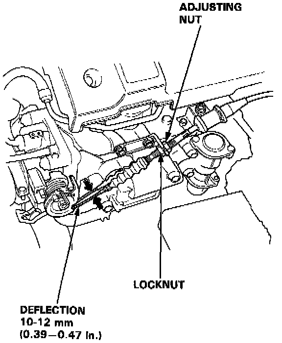

Throttle Cable/Linkage: Testing and Inspection
INSPECTION1. Warm up the engine to normal operating temperature (the radiator fan comes on).
2. Check that the throttle cable operates smoothly with no binding or sticking. Repair as necessary.

3. Check cable free play at the throttle linkage. Cable deflection should be 10-12 mm (0.39-0.47 in.)
4. If deflection is not within specs, loosen the locknut, turn the adjusting nut until the deflection is as specified, then retighten the locknut.
5. With the cable properly adjusted, check the throttle valve to be sure it opens fully when you push the accelerator pedal to the floor. Also check the throttle valve to be sure it returns to the idle position whenever you release the accelerator pedal.